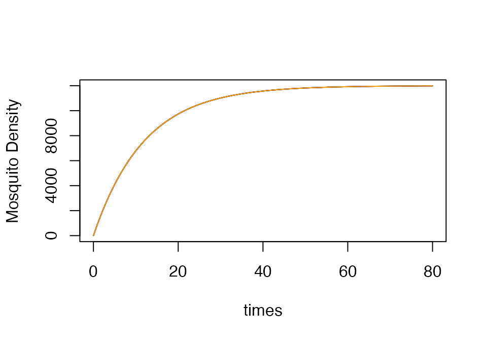
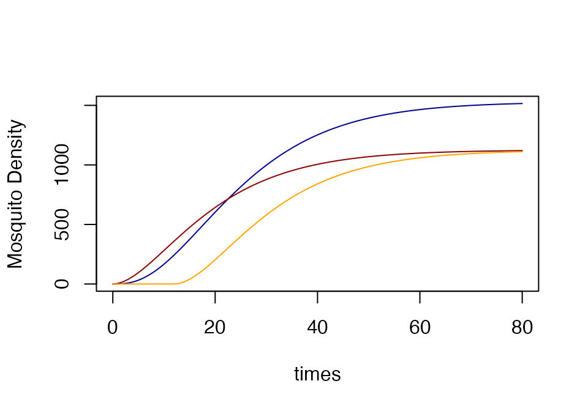
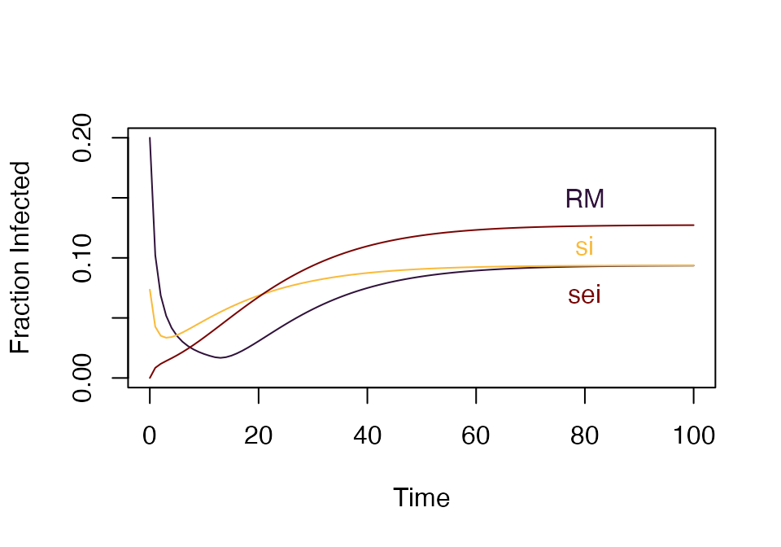
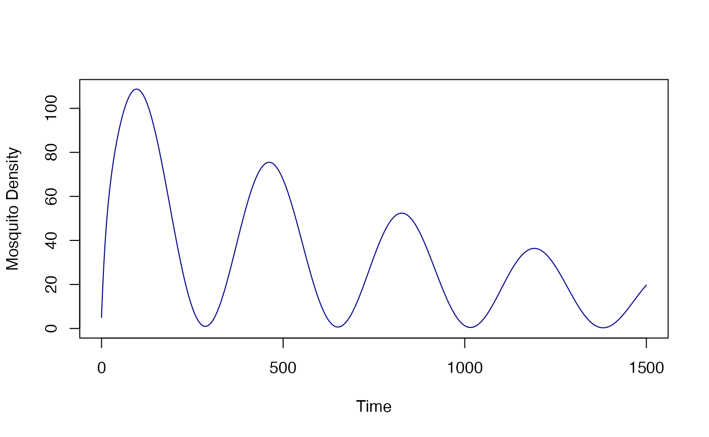
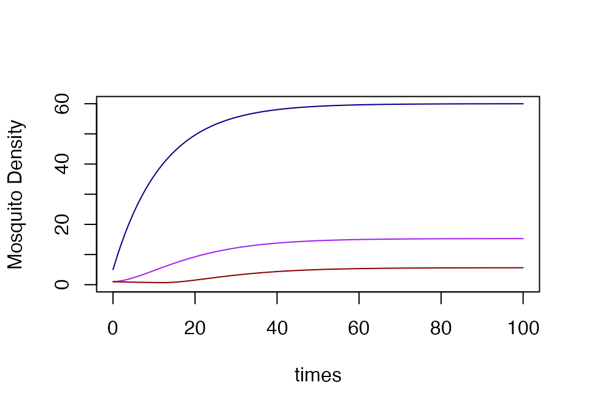
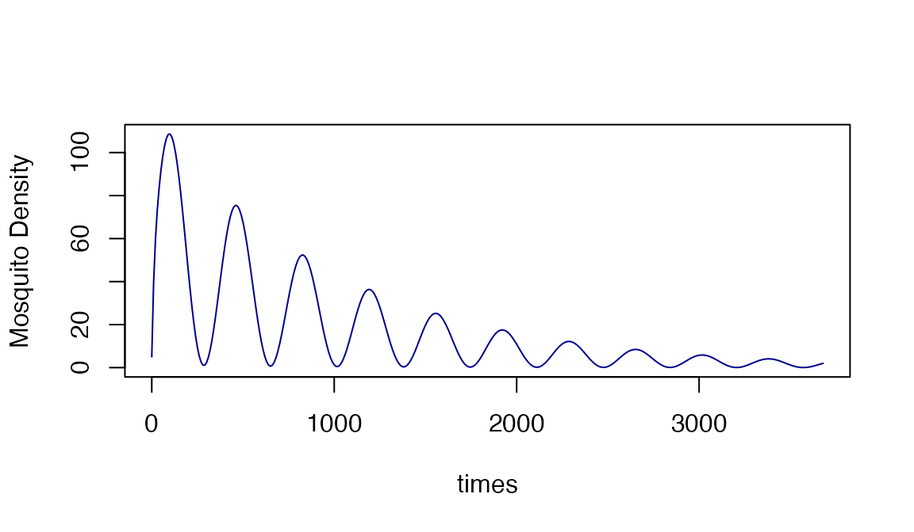

Nimble model building in ramp.xds
proceeds from simple to complex. Some basic concepts used throughout
ramp.xds are:
Model Family - what is colloquially referred to
as a model in the code library is more accurately described as
a model family. Each model family is defined by a set of states
and transitions (i.e. as defined for one population stratum)
that represent the true but unobservable state of a population,
also known as latent states. A model family describing adult
mosquitoes has been assigned a unique MYZname and that can
be setup using xds_setup(MYZname = 'this'). A model in
ramp.xds is defined by a
xds object – it can be solved, and it will
return values.
Each model can be represented as a directed graph, and two models belong to the same model family if their graphs are identical.
Two models are also identical if one can be derived from another by a change of variables.
Spatial Dynamics - in the case of adult mosquitoes, the population is structured spatially: each stratum represents the mosquitoes in a single patch. The states and state transitions are replicated in each patch.
Forcing is incorporated through functions that compute the parameters as a function of time. By default, each model is set up as an autonomous system of equations. An autonomous system is then modified by adding exogenous variables and forcing, making it a non-autonomous system.
Vector Species (or types) - basic setup handles a single vector species (or type). Each new species must be added separately. adds to the model.
Model Skill Set - a model’s skill set is defined as the set of observable quantities that are naturally represented by the latent states such that they can be computed without requiring extraneous information.
The basic mosquito models in ramp.xds
are variants of George Macdonald mathematical models, developed with
help from P. Armitage. The variables for all the models in
ramp.xds are mosquito densities, and the
default model is from Aron & May, 1982.
ramp.xds there are several versions of
basic models for mosquito infection dynamics. These models make similar
assumptions about mosquito ecology and infection dynamics. (The
equations are in the documentation for The four models are
basicM - see [dMYZdt.basicM] does not
include any infection dynamics.
basicM <- xds_setup(MYZname = "basicM", Xname = "trivial", Xopts = list(kappa = .1, Y=0, Z=0))
basicM <- xde_solve(basicM, Tmax=80)si - A standard SI compartmental model
for infection, see [dMYZdt.si].
si <- xds_setup(MYZname = "si", Xname = "trivial", Xopts = list(kappa = .1, Y=0, Z=0), MYZopts = list(Y=0))
si <- xde_solve(si, Tmax=80)sei - a standard SEI compartmental
model, see [dMYZdt.sei]
sei <- xds_setup(MYZname = "sei", Xname = "trivial", Xopts = list(kappa = .1), MYZopts = list(Y=0, Z=0))
sei <- xde_solve(sei, Tmax=80)RM - modified from Aron & May
(1982), see [dMYZdt.RM]
RM <- xds_setup(MYZname = "RM", Xname = "trivial", Xopts = list(kappa = .1), MYZopts = list(Y=0, Z=0))
RM <- xde_solve(RM, Tmax=80)The ecology for basicM and si and
sei and RM is identical. Let \(M\) denote the density of adult mosquitoes,
\(\Lambda(t)\) the emergence rate of
adult mosquitoes from aquatic habitats, and \(g\) the adult mosquito mortality rate.
Mosquito population density is described by an equation:
\[\frac{dM}{dt} = \Lambda(t) - g M\] If \(n_p>1\) then \(M\) is a vector and we formulate a demographic matrix as described in Spatial Dynamics of Malaria Transmission (2023) PLoS Computational Biology. The models have four parameter families:
\(g\) the patch-specific daily mortality rates (the probability of surviving one day is \(p = e^{-g}\)
\(\sigma\) is a patch-specific daily emigration rate
\(\mu\) is the a patch-specific proportion lost through migration
\(\cal K\) is a mosquito dispersal matrix
\[\Omega = \mbox{diag}\left(g\right) + \left[ \mbox{diag}\left(1-\mu\right) - {\cal K} \right] \cdot \mbox{diag}\left(\sigma\right)\] Note that if \(n_p=1\), then \(\Omega = g\). This gives us the more general formulation:
\[\frac{dM}{dt} = \Lambda(t) - \Omega \cdot M\]
If \(\Lambda\) is constant, then the equation has a steady state:
\[\bar M = \Omega^{-1} \cdot \Lambda\]
xds_plot_M(basicM)
xds_plot_M(si, add=TRUE, clrs="darkred")
xds_plot_M(sei, add=TRUE, clrs = "darkblue")
xds_plot_M(RM, add=TRUE, clrs = "orange")
The infection dynamics for si and sei and
RM are identical. (The model basicM does not
define a variable \(Y\)).
The dynamics of infection depend on a quantity that we will call \(\kappa(t)\) denoting the net infectiousness (NI) of humans, or the probability a mosquito becomes infected after blood feeding on a human. Let \(f\) denote the overall blood feeding rate, and let \(q\) denote the fraction of blood meals on humans (a.k.a the human fraction). Let \(Y\) denote the density of mosquitoes that are infected with parasites, and its dynamics are described by:
\[\frac{dY}{dt} = fq\kappa(M-Y) - \Omega \cdot Y\]
xds_plot_Y(si, llty=1, clrs="darkred")
xds_plot_Y(sei, add=TRUE, llty=2, clrs = "darkblue")
xds_plot_Y(RM, add=TRUE, llty=3, clrs = "orange")
If \(M\) and \(\kappa\) have reached the steady state, then the fraction of infected mosquitoes, \(y=Y/M\) is given by:
\[y = \frac{fq\kappa}{g+fq\kappa}\]
and the fraction of infectious mosquitoes (i.e. with sporozoites in their salivary glands), is called the sporozoite rate,
\[z = e^{-g\tau} \frac{fq\kappa}{g+fq\kappa}\]
Let \(Z\) denote the density of mosquitoes that have sporozoites in their salivary glands, and let \(\tau\) denote the time elapsed between the blood meal that infects a mosquito and the point in time when a surviving mosquito has sporozoites in its salivary glands. The probability a mosquito has survived \(\tau\) days is \(e^{-g\tau}\), and we let a subscripted \(\tau\) denote the value of a variable at time \(t-\tau.\)
RM the density of infectious mosquitoes is modeled
by:\[\frac{dZ}{dt} = e^{-g \tau} fq\kappa_\tau(M_\tau-Y_\tau) - gZ\]
si model, the density of infectious mosquitoes
has ignored the delay, but it discounts biting by the fraction that
would survive (and disperse) through the EIP. To put it another way
si and RM would have the same steady state if
autonomous model.\[Z = e^{-\Omega \tau}\cdot Y\]
si model, the density of infectious mosquitoes
has ignored the delay, but it discounts biting by the fraction that
would survive (and disperse) through the EIP.\[dZ/dt = (Y-Z)/\tau- \Omega \cdot Z\]
xds_plot_Z(sei, llty=1, clrs="darkblue")
xds_plot_Z(si, add=TRUE, clrs = "darkred")
xds_plot_Z(RM, add=TRUE, clrs = "orange")
xds_plot_Z_fracs(sei, clrs="darkblue")
xds_plot_Z_fracs(RM, add=T, clrs = "orange")
xds_plot_Z_fracs(sei, add=T, clrs="darkblue")
xds_plot_Z_fracs(si, add=T, clrs = "darkred")
This is equivalent to Macdonald’s formula.
In ramp.xds this set of equations is
implemented. This sets up and solves a model with \(\kappa\) and \(\Lambda\) passed as constant values, and a
human population density of \(H=10.\)
rm = xds_setup(Xname = "trivial", Xopts = list(kappa=0.1), Lname = "trivial", Lopts = list(Lambda=5), HPop=10)
rm = xde_solve(rm, Tmax=100)
xds_plot_M(rm)
xds_plot_Y(rm, add=TRUE)
xds_plot_Z(rm, add=TRUE)
If we wanted to replicate Macdonald’s equations, we would let \(a=fq\), \(p = e^{-g}\) or equivalently \(g = -\ln p\), \(\kappa = x,\) and \(n=\tau\) so:
\[e^{-g\tau} \frac{fq\kappa}{g+fq\kappa} = p^n \frac{ax}{ax - \log_{e}p}\]
Lo = list(season = function(t){1+sin(2*pi*t/365)},
trend = function(t){exp(-t/1000)},
Lambda =5)
rm = xds_setup(Xname = "trivial", Xopts = list(kappa=0.1), Lname = "trivial", Lopts = Lo, HPop=10)
rm <- xde_solve(rm, 3680, dt=10)
xds_plot_M(rm)